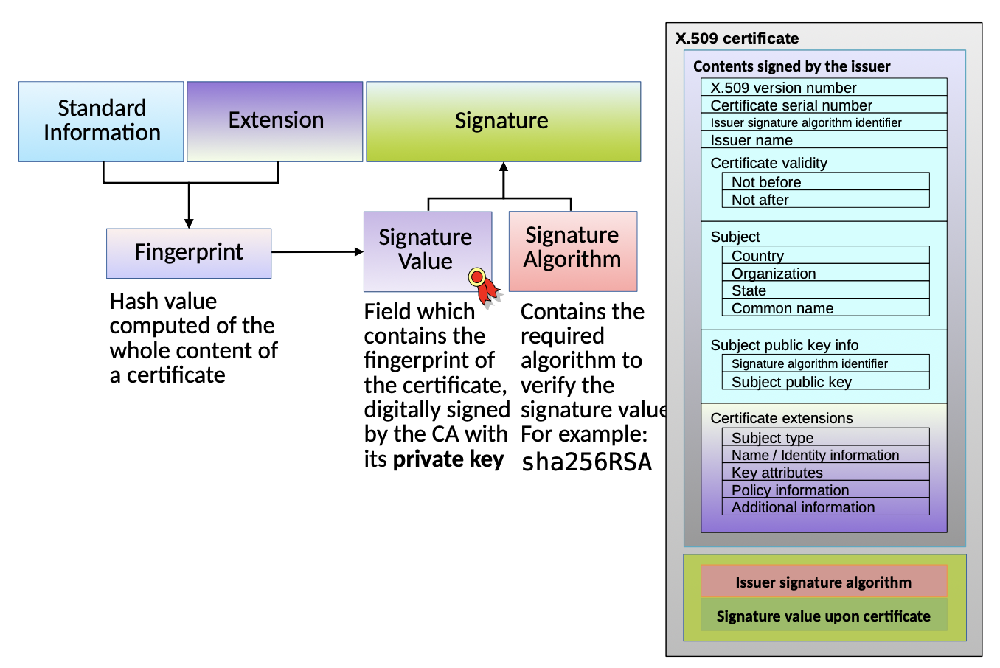

tags: ac2 asymmetric
X.509 Certificates
links: AC2 TOC - X.509 - Index
Content of a X.509 certificate
- X.509 version (Integer)
- CA serial number (Integer)
- A digital signature algorithm identifier (OID)
- The identity of the signer / issuer (Distinguished Name)
- Validity period (DateTime Not Before, Not After)
- The identity of the subject (common name, org. unit, org., state, country OID)
- The public key of the subject (Bit String)
- Optional: URL to revocation center (OCSP!)
- Auxiliary information (identity address, alternative names SAN)
- The digital signature
Size
A typical X.509 certificate size can range from a few hundred bytes to a few kilobytes.
Maybe between 2 and 8 kilobytes.
- Public key (32-512 byte)
- Signature (32-64 byte)
- Timestamps, subject, issuer, protocol basics (many characters)
- ASN.1 and DER (structure, encoding)
Be aware that we have multiple X.509 certificates in a chain.

X.509 in ASN.1
Certificate ::= SEQUENCE {
tbsCertificate TBSCertificate,
signatureAlgorithm AlgorithmIdentifier,
signatureValue BIT STRING }
Version
Version ::= INTEGER {v1(0), v2(1), v3(2)}
Mostly v3 in use today.
Serial Number
CertificateSerialNumber ::= INTEGER
The unique identifier for this certificate relative to the certificate issuer. This serial number is essential when revoking a certificate.
Signature Algorithm
AlgorithmIdentifier ::= SEQUENCE {
algorithm OBJECT IDENTIFIER,
parameters ANY DEFINED BY algorithm OPTIONAL}
Specifies the algorithm and any needed parameters (like the elliptic curve to be used in ECDSA). This is specified twice in “Standard Information” and in “Signature”. Both MUST be identical.
Issuer
Holds the Distinguished Name (DN) in X.500 notation of the CA that issued the certificate
Validity
Validity ::= SEQUENCE {
notBefore Time,
notAfter Time }
Valid unless otherwise revoked. In UTC time.
Subject Name
The same DN is not allowed to be given to different entities.
General Subject Public Key Info
SubjectPublicKeyInfo ::= SEQUENCE {
algorithm AlgorithmIdentifier,
subjectPublicKey BIT STRING }
AlgorithmIdentifier ::= SEQUENCE {
algorithm OBJECT IDENTIFIER,
parameters ANY DEFINED BY algorithm OPTIONAL }
// For RSA
AlgorithmIdentifier ::= SEQUENCE {
algorithm 1.2.840.113549.1.1.1 -- RSA
parameters NULL }
SubjectPublicKey ::= SEQUENCE {
modulus INTEGER, -- n
publicExponent INTEGER -- e }
// For DSA
AlgorithmIdentifier ::= SEQUENCE {
algorithm 1.2.840.10040.4.1 -- DSA
parameters DSS-Params }
DSS-Params ::= SEQUENCE {
p INTEGER, (prime modulus)
q INTEGER, (prime divisor of p-1)
g INTEGER (generator) }
SubjectPublicKey ::= BIT STRING {
publicExponent INTEGER }
// For ECC
AlgorithmIdentifier ::= SEQUENCE {
algorithm 1.2.840.10045.2.1 -- EC Public Key
parameters 1.3.132.0.10 -- 256-bit Koblitz: secp256k1 }SubjectPublicKey ::= BITSTRING {
ECPoint OCTET STRING }
X.509 Extensions
An extension can be marked as CRITICAL (usually extension “keyUsage” only). In this case an application must be able to process and handle this extension, if not it must reject the whole certificate!
X.509v3 subjectAltNames (SAN)
Indicates alternative name forms associated with the owner of the certificate. If the subject DN (Standard Information) is null, one or more alternative name forms must be present, and this extension must be marked CRITICAL.
Email addresses must be subjectAltNames and should not be used for the subject distinguished name (DN)!
basicConstraints
Indicates if the subject may act as a CA. If so, a certification path length constraint may be specified. If the path length is not present then there is no limit!
To identify a CA Root Certificate (for signing certificates): the basicConstraints field should always be present, and the CA attribute in the basicConstraints field must be set to a value of TRUE and must be marked CRITICAL.
keyUsage
Bit string used to identify (or restrict) the functions or services that can be supported by using the public key in this certificate.
Leaf:
- digitalSignature: Bit 0
- nonRepudiation: Bit 1
- keyEncipherment: Bit 2
- dataEncipherment: Bit 3
- keyAgreement: Bit 4
CA:
- certificateSign: Bit 5
- crlSign: Bit 6 (Sign revoke certificate)
Extended Key Usage
Sequence of one or more Object Identifiers (OID) that identify specific usage of the certificate. OIDs associated with this extension can be:
- serverAuth – TLS Web Server Authentication
- clientAuth – TLS Web Client Authentication
- codeSigning
- emailProtection
- timeStamping
- ocspSigning
Policy Information Extensions
- Authority Key Identifier
- Identifies the public key that corresponds to the private key that has signed the certificate. This MUST be included in all certificates (non-critical), unless it is a self-signed certificate.
- Subject Key ID
- Identifies certificates that contain a particular public key. This MUST be included in all CA certificates (non-critical).
- CRL Distribution Point
- Indicates the location of the CRL partition where revocation information associated with this certificate resides.
- Certificate Policies
- The certificate policies extension contains a sequence of one or more policy information terms, each of which consists of an OID.
- Private-key usage period
- Indicates the period of time to use the private key corresponding to the public key. For example, with digital signature keys, the usage period for the signing private key can be shorter than that for the signature verifying public key.
Authority Information Access
A private extension present in end-entity and CA certificates, indicates how information or services offered by the issuer of the certificate can be obtained. Two access method OIDs have been defined:
- CA Issuers: This information can be used to help build certification paths or other information of services of the issuing CA
- OCSP Validation Service: This access method is for on-line validation services based on OCSP
Subject Information Access
A private extension present in end-entity and CA certificates, indicates how information and services offered by the subject in the certificate can be obtained. One access method OID has been defined for CAs and one for end entities:
- CA Repository: This CA Repository access method identifies the location of the repository where the CA publishes certificate and CRL information
- Time stamping: The Time-Stamping access method indicates that the subject identified in the certificate offers a time stamping service
links: AC2 TOC - X.509 - Index